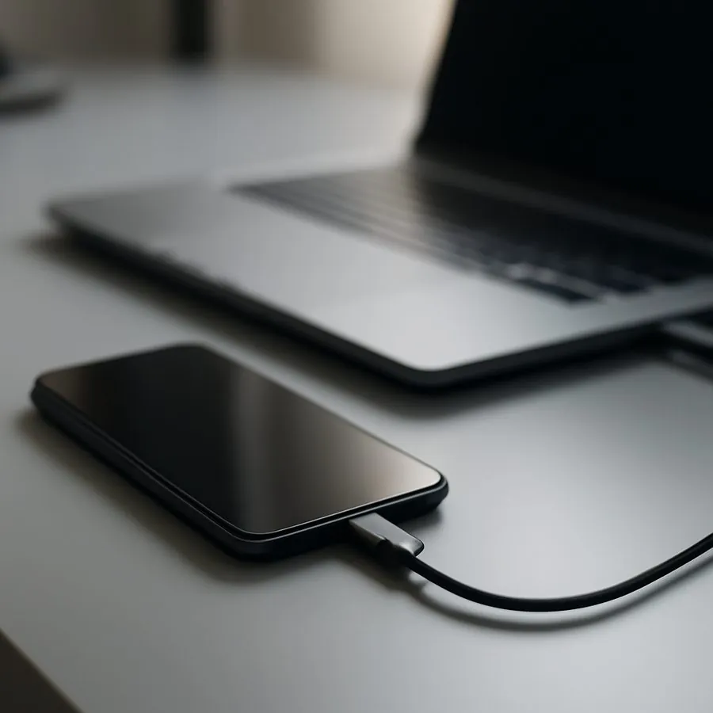

📄
สัญญารายเดือน
ตรวจข้อมูลเบื้องต้นและแนะนำให้ติดต่อผู้ให้บริการหรือผู้ทำสัญญา
ช่วยตรวจสอบประเภทการล็อก เอกสาร และแนะนำช่องทางติดต่อผู้ให้บริการหรือเจ้าของบัญชีเดิม โดยดำเนินการเฉพาะเครื่องที่มีหลักฐานความเป็นเจ้าของเท่านั้น

คำว่า “ติดล็อก” มีหลายประเภท ต้องแยกสาเหตุก่อนจึงจะบอกวิธีแก้ได้
ตรวจข้อมูลเบื้องต้นและแนะนำให้ติดต่อผู้ให้บริการหรือผู้ทำสัญญา
แนะนำขั้นตอนให้เจ้าของเดิมออกจากระบบหรือกู้บัญชีผ่านช่องทางทางการ
ให้คำแนะนำการกู้ Apple Account และหลักฐานซื้อ ไม่รับข้ามระบบความปลอดภัย
ตรวจรุ่น หมายเลขเครื่อง และอาการ เพื่อแยกจากปัญหาระบบหรือฮาร์ดแวร์
| รายการ | สิ่งที่ต้องใช้ | ค่าใช้จ่าย/เวลา |
|---|---|---|
| ตรวจประเภทการล็อก | ตัวเครื่อง รุ่น และภาพข้อความที่ขึ้น | ตรวจเบื้องต้นฟรี |
| ตรวจความเป็นเจ้าของ | ใบเสร็จ สัญญา กล่อง หรือเอกสารที่มี IMEI | ก่อนรับดำเนินการทุกกรณี |
| ประสานผู้ให้บริการ | ข้อมูลผู้ทำสัญญาและสถานะยอดชำระ | ขึ้นอยู่กับผู้ให้บริการ |
| กู้บัญชี Apple/Google | บัญชี อีเมล หรือเบอร์ที่เจ้าของเข้าถึงได้ | ดำเนินการผ่านช่องทางทางการ |
ปิดบังข้อมูลส่วนตัวที่ไม่จำเป็น และส่งเฉพาะรุ่นเครื่องกับข้อความแจ้งเตือน